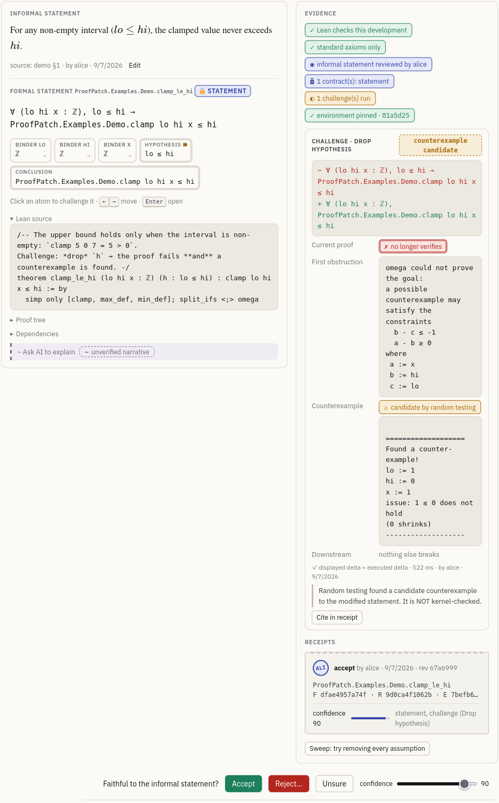
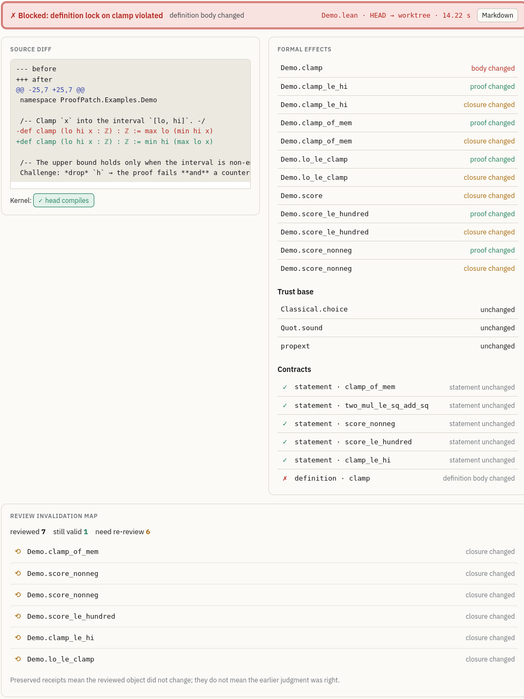

Builds a Lean 4 tool that fingerprints elaborated statements, runs kernel-checked challenges on them, and gates patches; it is evaluated on Mathlib revisions and LLM agents.
Abstract
The kernel of the Lean proof assistant checks that a proof establishes its statement. Whether the statement says what was intended is left to human reviewers. This is the old problem of validating a specification, and it grows more pressing as language models write formal statements in bulk and agents edit formal developments continuously. We present ProofPatch, a tool that helps reviewers judge Lean statements and keeps their judgments valid while the development changes. A reviewer can ask the kernel targeted questions about a statement, such as whether a hypothesis is needed or whether a counterexample exists. Each decision is stored with fingerprints of the statement as Lean elaborated it and of the definitions it depends on, and any declaration can be pinned so that a patch changing it is blocked, whether a person or an agent built on a large language model (LLM) wrote the patch. Working on elaborated terms rather than source text is the central design choice: notation and formatting changes leave a decision intact, and a changed definition reaches every theorem that uses it. On 229 pairs of consecutive revisions of Mathlib, Lean's mathematics library, ProofPatch sends 118 of 12,898 synthetic decisions back for review. Every text-based alternative misses at least 38 of these or sends back at least 13 times as many. On 1,527 labeled statements, kernel evidence flags unfaithful ones with precision 0.88 to 0.96, and in 344 runs of an LLM agent no change to a pinned statement got through.
Problem
The Lean kernel checks proofs but not whether a statement means what was intended. Review decisions on statements also go stale silently as formal developments change, a problem made worse by LLMs that generate statements in bulk and agents that edit code continuously.
Approach
ProofPatch stores review decisions as receipts. Each receipt carries fingerprints of the canonicalized elaborated statement and of the definitions it depends on, so it survives notation changes but is invalidated when a dependency changes. Kernel-backed challenges mutate statements (drop or weaken hypotheses, strengthen conclusions, vacuity checks, refutation) to produce evidence for reviewers. A gate blocks patches that violate locks on pinned declarations, whether a person or an LLM agent wrote them.

Figure 6: Statement screen for clamp_le_hi . Left: the informal statement above the formal one, split into its parts. Right: the evidence of the challenge that drops h , ending with the grade’s fixed wording, and alice’s receipt, which cites it. Bottom: the form that records a decision.

Figure 9: Gate report on the patch that rewrites clamp : the source diff, the effect on every declaration, the lock results, and the six receipts sent back for re-review.
Results
On 229 Mathlib revision pairs, the gate sent back 118 of 12,898 synthetic receipts with no needless or missed ones, while every text-based method missed at least 38 or sent back at least 13 times as many. On 1,527 labeled statements, kernel evidence flagged unfaithful ones with precision 0.88 to 0.96. Across 344 LLM agent runs, no change to a locked statement got through.
Method
sent back
needless
missed
statement diff
94
54
78
file diff
12,898
12,780
0
text closure on the kernel's graph
290
210
38
gate, statement fingerprints only
62
0
56
gate
118
0
0
Receipts sent back on 229 Mathlib revision pairs (12,898 synthetic receipts)